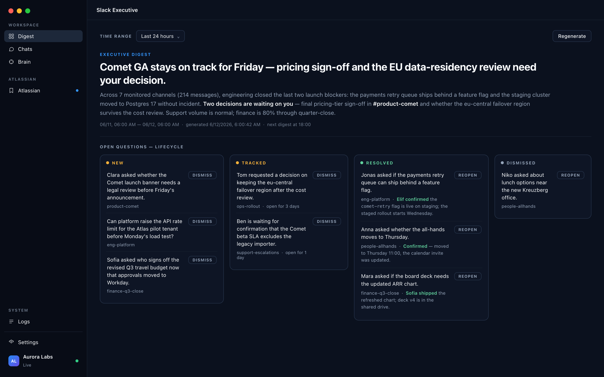
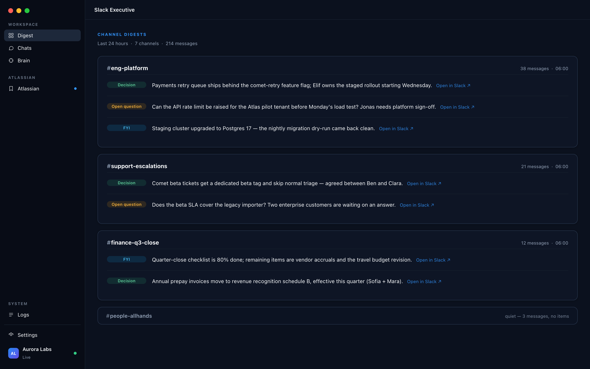
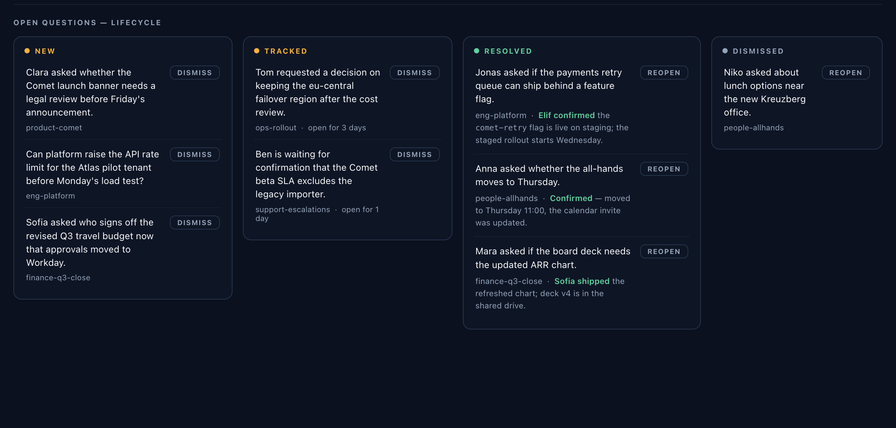
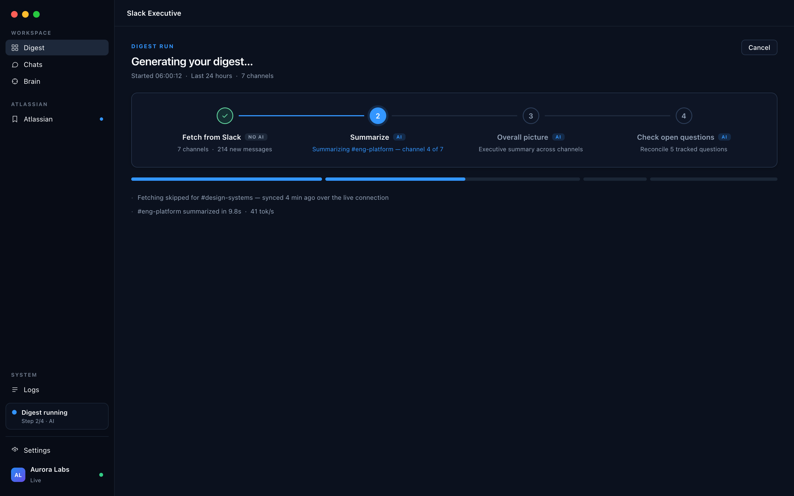
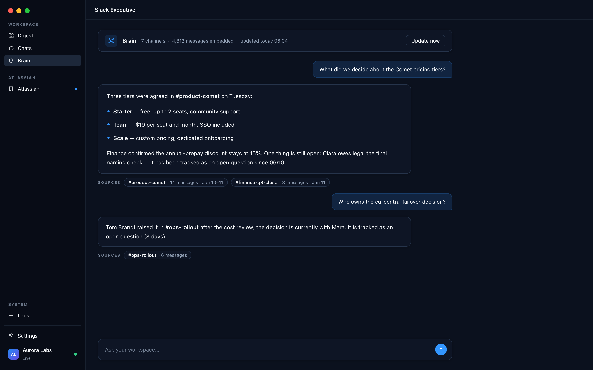
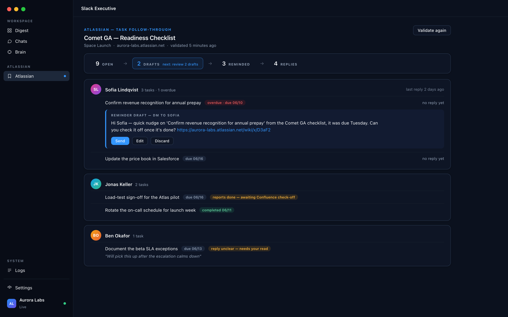
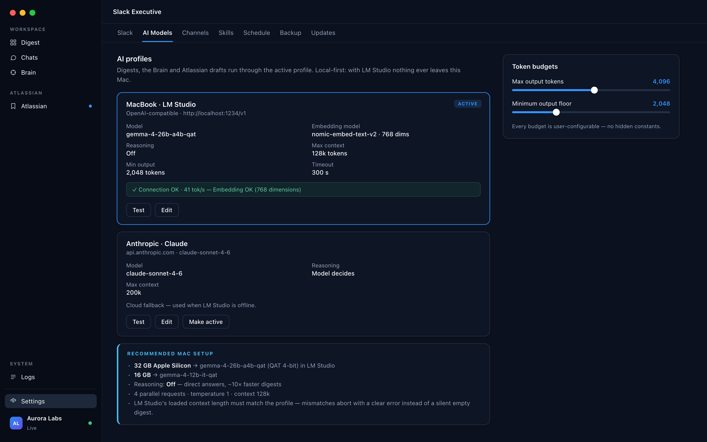
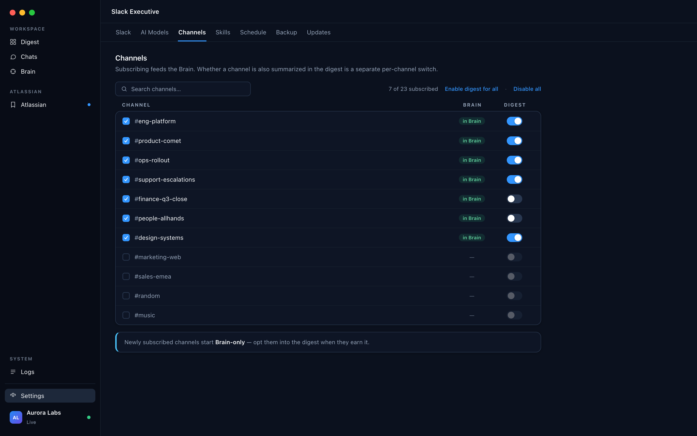

Your Slack, distilled to what matters.
Slack Executive is a native macOS app that reads your channels and hands you an executive digest — decisions, open questions, critical updates — on your schedule. Run it on a local LLM and nothing ever leaves your Mac.

Cut through the noise
Hundreds of messages become one briefing: what was decided, what's blocked, what needs you. Color-coded by weight — decisions, open questions, FYI.
Nothing falls through
Open questions are tracked as living items across days — new, tracked, resolved, dismissed — until someone actually answers, not until the scrollback swallows them.
Your data stays yours
Read-only by design, credentials in the macOS Keychain, and a local-first AI setup: with LM Studio, the model runs on your own machine.
Every channel, distilled to its substance
On your schedule — morning and evening, or whenever you ask — Slack Executive reads each monitored channel and writes a digest a chief of staff would hand you: decisions in green, open questions in amber, FYI in blue. Every item links back to the exact Slack messages it came from.
- Evidence, not vibes — each item carries an "Open in Slack" link to its source thread.
- An executive summary across channels tells you in three sentences whether today needs you.
- Quiet channels stay quiet — no padding, no filler.

Questions don't dissolve in the scrollback
An unanswered question from Tuesday is still unanswered on Friday — so the app keeps it on the board. Questions move through new → tracked → resolved, with the resolution quoted once someone answers. You can dismiss the noise and reopen anything with one click.

A glass box, not a black box
Every digest run shows its four phases — fetch, summarize, overall picture, open-question check — with clear AI / no-AI badges and live progress per channel. Cancel anytime; pause the Brain and resume it later.
- Smart sync skip — channels already fresh over the live connection aren't re-fetched.
- Background runs stay visible from anywhere in the app via the sidebar indicator.
- A full log view when you want to see exactly what happened.

Ask your workspace anything
The Brain continuously embeds your subscribed channels into a local knowledge base. Ask in plain language — "What did we decide about the pricing tiers?" — and get an answer with the exact channels and message counts it drew from.
- Answers cite their sources — channel, message count, date range.
- Knows what's still open: tracked questions surface right in the answer.
- Updates itself nightly, or on demand.

From checklist to checked-off
Point it at a Confluence task page and it closes the loop for you: it validates who's done what, groups open tasks by person, and drafts the reminder DMs — which you review and send with one click. Replies are read and classified, but only the ticked checkbox counts as done.
- "Reports done — awaiting Confluence check-off" — a claim is an indication, never the truth.
- Reminders read like a human wrote them — including the plainly pasted page link.
- A workflow funnel — open → drafts → reminded → replies — shows where the bottleneck is.

Your model, your machine, your budget
Run everything on a local model via LM Studio — recommended and tuned out of the box — or plug in Anthropic or any OpenAI-compatible endpoint as a fallback. Profiles are tested with one click, embedding model included.
- Reasoning control for thinking models — "off" makes local digests ~10× faster.
- Every token budget is user-configurable; nothing is a hidden constant.
- Built-in recommended Mac setup for 16 GB and 32 GB machines.

You decide what it reads — channel by channel
Subscribing a channel feeds the Brain; whether it also appears in the digest is a separate switch. New channels start Brain-only and earn their digest slot. Reconnect a different workspace and the catalog re-scopes itself — the old workspace's data is kept frozen and returns when you do.
- DMs and group DMs are excluded from digests by design.
- Schedules respect your activity window — runs outside it are deferred, never silent.
- Full backup & restore reproduces your setup on a fresh Mac.

Built like it handles your company's nervous system
Because it does. Every architectural decision starts from "read, don't touch".
🔑Keychain only
Slack credentials, API keys and cookies live exclusively in the macOS Keychain — never in files, databases, logs or error messages.
👻Invisible by default
The app never emits typing indicators, presence changes or any client-originated visible event. Reading leaves no trace.
📵Read-only by design
The one optional write — marking digested channels as read — is opt-in, narrowly scoped, fully logged, and never touches DMs.
💻Local-first AI
With LM Studio, summaries, the Brain and embeddings are computed on your own hardware. No cloud account required.
🕰️Polite traffic
Activity windows, rate limiting and jitter govern every Slack call. Stealth mode keeps scheduled runs inside working hours.
🧳Yours to take
One backup file carries every setting, credential reference and dataset — restore it on a new Mac and you're exactly where you left off.
Three steps to your first briefing
Connect your workspace
One click imports your existing Slack session from Chrome — no password, no bot, no admin approval. Multiple workspaces? Pick one.
Choose your channels
Pick what feeds the Brain and what makes the digest. The app suggests sensible defaults; you stay in control, channel by channel.
Get your digest
Run the first digest right from onboarding — or let the schedule deliver it morning and evening. From then on, Slack reads itself.
Start reading less. Start missing nothing.
Download the latest signed build — the app keeps itself up to date from here.